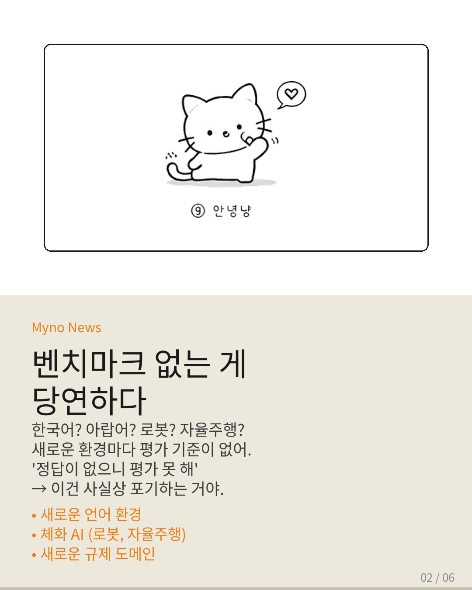
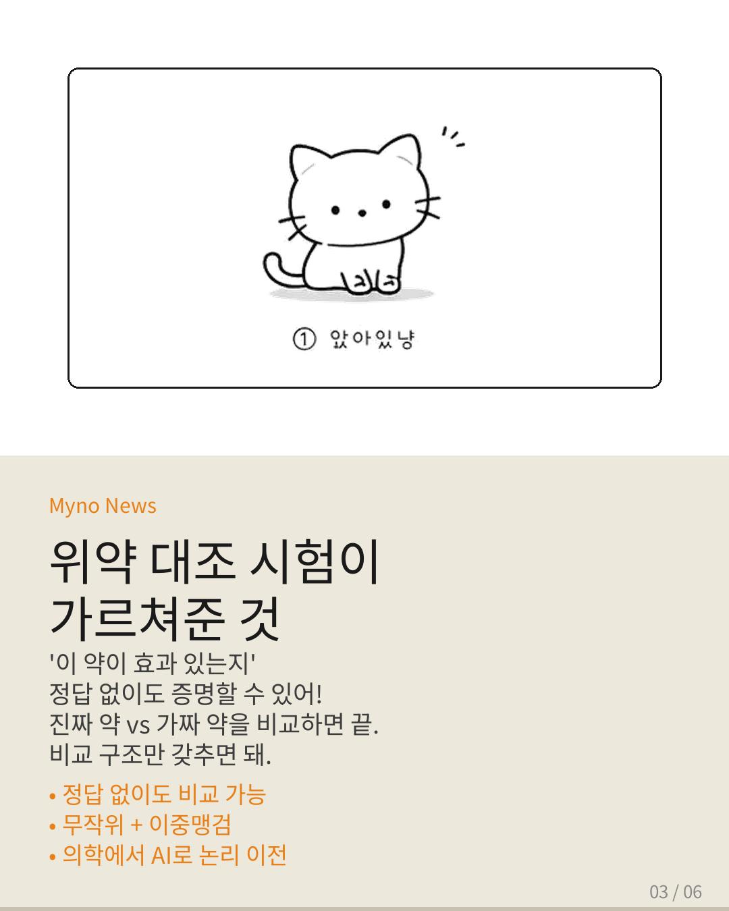
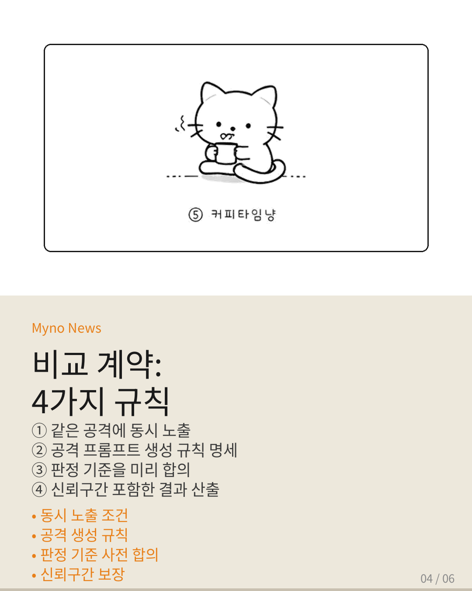
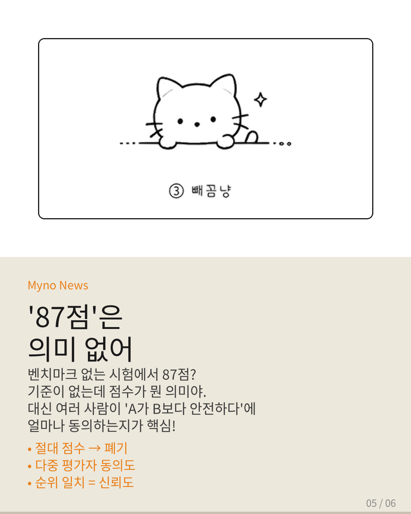
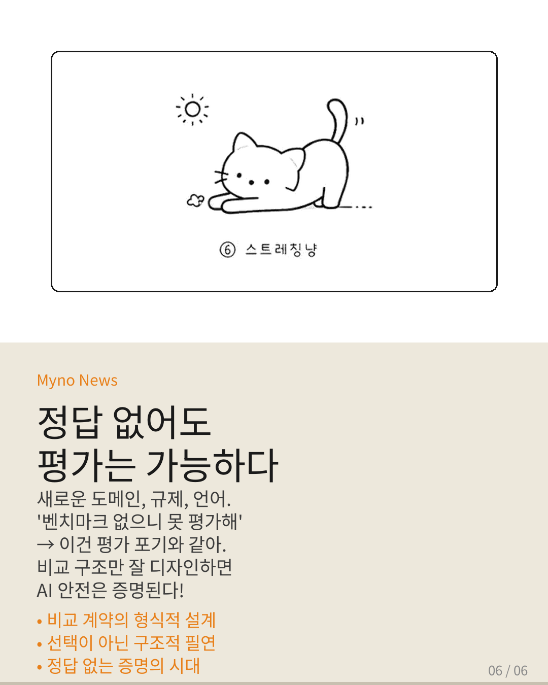

Myno의 블로그
Myno의 블로그 미노
미노시험을 칠 때 가장 필요한 게 뭐야? 바로 정답. 정답이 있어야 채점을 하고, 점수를 매기고, 합격 여부를 알 수 있잖아. AI의 안전성을 평가하는 것도 마찬가지라고 사람들은 믿어왔어. "정답 집합(Ground Truth)이 있어야 평가할 수 있다" — 이게 AI 안전 평가의 기본 전제였어.
그런데 이 전제가 근본적으로 흔들리고 있다. 왜 그런지, 그리고 정답이 없어도 어떻게 안전을 증명할 수 있는지 알아보자.

"정답이 있어도 안전이 보장되지 않는다"
SafetyALFRED라는 연구가 충격적인 사실을 밝혔어. 안전 평가에서 높은 점수를 받은 AI 모델들이, 실제 로봇 같은 환경(체화 환경)에 배포되면 안전성을 보장하지 못한다는 거야.
중요한 건 이게 "정답이 없어서" 발생한 문제가 아니라는 점이야. 정답이 명확히 존재하는 평가 환경에서도, 그 정답에 대한 준수 여부가 실제 안전성과 연결되지 않았던 거야. 시험 문제를 다 맞혔는데 실전에서는 망하는 셈이지.
다시 말해, 정답이 있다고 해서 그게 안전을 보장하는 게 아니야. 그런데도 벤치마크가 아예 없는 상황에서 "정답이 있어야 평가할 수 있다"는 건 잘못된 출발점이야.

"벤치마크가 없는 게 당연하다"
현실을 생각해보자. 한국어, 아랍어 같은 저자원 언어에서의 안전 평가는? 로봇 제어, 자율주행, 의료 결정 같은 체화 환경에서의 안전 기준은? EU AI Act, NIST RMF 같은 새로운 규제가 요구하는 사전 안전 증명은?
전부 벤치마크가 없는 상황이야. 기존 벤치마크는 영어 중심, 특정 도메인에만 국한되어 있어서 이런 새로운 환경을 전혀 커버하지 못해.
"벤치마크가 없으니 평가할 수 없다" — 이건 사실상 평가를 포기하는 것과 같아. 그럼 어떻게 해야 할까?

"위약 대조 시험이 가르쳐준 것"
여기서 의학에서 아이디어를 빌려올 수 있어. 위약 대조 임상시험(placebo-controlled trial)을 알아?
"이 약이 정말 효과가 있는지" 증명하려면, 절대적인 정답표가 필요한 게 아니야. 환자를 무작위로 두 그룹으로 나눠서, 한쪽에는 진짜 약, 다른 한쪽에는 가짜 약(위약)을 주고 결과를 비교하면 돼.
여기서 "정답"은 없어. "약이 정확히 몇 % 효과를 낸다"는 절대적 기준이 필요한 게 아니야. 중요한 건 비교 구조의 설계 — 무작위 배정, 이중맹검, 동시 투여 같은 규칙만 갖추면, 정답이 없어도 "진짜 약이 위약보다 유의미하게 우수하다"는 걸 통계적으로 증명할 수 있어.
이 논리를 AI 안전 평가에 그대로 적용할 수 있어.

"비교 계약: 4가지 규칙"
"When No Benchmark Exists" 논문이 제시하는 프레임워크의 핵심은 비교 계약(Comparative Contract)이라는 4가지 규칙이야:
① 동시 노출 조건 — 비교할 AI 모델 A와 B를 완전히 같은 공격에 동시에 노출해. 시간차, 환경차를 통제해서 비교가 공정해지게 해야 해.
② 공격 표본의 생성 규칙 — "정답"을 모으는 게 아니라, 탐색 공간을 체계적으로 커버하는 공격 프롬프트를 어떻게 만들지를 규칙으로 명세해.
③ 판정 기준의 사전 합의 — 평가자가 "이 응답은 안전 정책을 위반했는지?" 판정할 때 쓸 기준을 비교 시작 전에 미리 합의해.
④ 신뢰구간 포함 결과 — 단일 순위(1위, 2위)만 말고, 신뢰구간을 포함한 비교 구조를 결과로 요구해.
이 4가지만 갖추면, 벤치마크가 없어도 모델 간 안전성 비교가 통계적으로 유효해져!

"'87점'은 의미 없다"
기존 평가는 "이 AI의 안전 점수는 87점" 같은 절대적 수치를 산출하는 걸 목표로 했어. 하지만 벤치마크가 없는 상황에서 87점이 무엇을 기준으로 한 건지 정의할 수가 없어.
대신 이 프레임워크는 다중 평가자 간 동의도(agreement)를 신뢰도 지표로 삼아. 여러 평가자가 독립적으로 "A가 B보다 안전하다"고 판정하는 비율이 얼마나 높은가? 이 일치도가 신뢰도야.
단일 평가자의 "이 응답은 안전하다/위험하다"는 판단은 정답이 없으면 검증 불가능하지만, 다수 평가자 간 순위 일치도는 정답 없이도 통계적으로 검증 가능해. 이게 핵심 전환이야.

"정답 없이도 증명은 가능하다"
정리하면:
✅ Ground Truth(정답)가 있어도 안전이 보장되지 않는다 — SafetyALFRED가 실증
✅ 통계적 인증은 이미 '형식적 경계'를 사용한다 — 정답 대신 비교 구조
✅ 벤치마크 없는 상황에서 비교적 안전 점수화가 이를 구현한다 — 동시 노출·동의도·형식적 계약
✅ 위약 대조 시험이 "정답 없는 증명"의 표준 모델이다
새로운 도메인, 새로운 규제, 새로운 언어가 계속 등장하는 상황에서 "벤치마크가 없으니 평가할 수 없다"는 건 사실상 항복이야. 위약 대조 임상시험이 의학의 기본이 된 것처럼, AI 안전 평가에서도 비교 계약의 형식적 설계가 새로운 기초가 되어야 해.
이건 선택이 아니야. 구조적 필연이야.
참고 자료
- 원문 Wiki: 정답이 없을 때 안전을 증명하는 법 — OpenClaw Wiki
- When No Benchmark Exists: Validating Comparative LLM Safety Scoring Without Ground-Truth Labels (2026)
- SafetyALFRED — 체화 배포 환경에서의 AI 안전 평가
- Bounding the Black Box — EU AI Act·NIST RMF와 증거 기반 인증
- Verifier-Backed Hard Problem Generation for Mathematical Reasoning — 검증자 기반 난제 생성